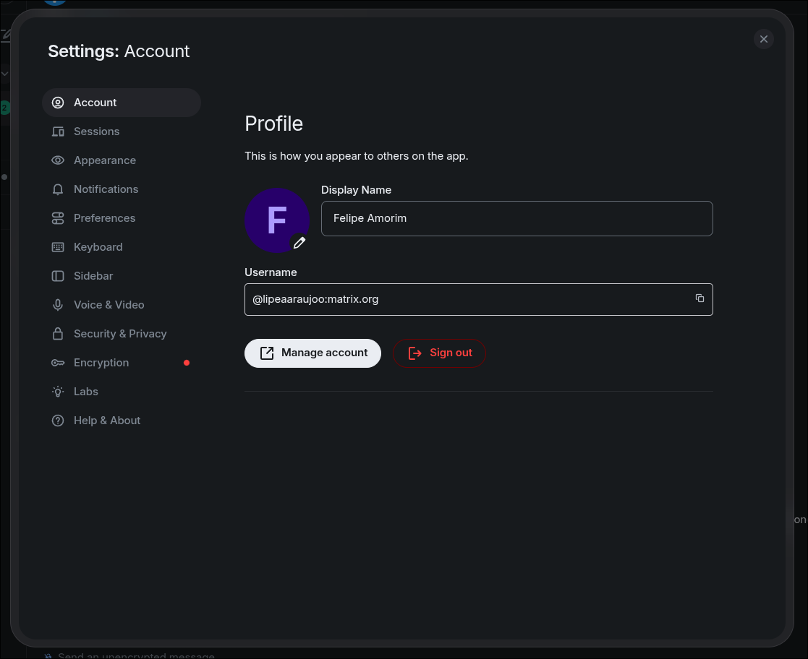
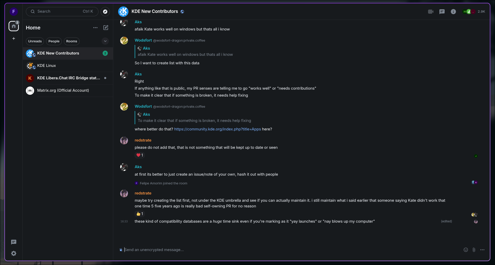
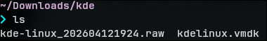
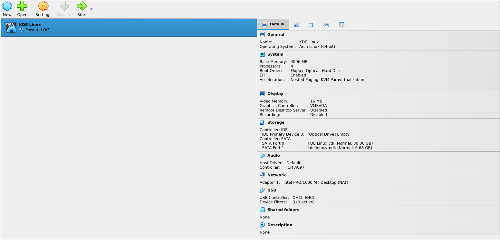
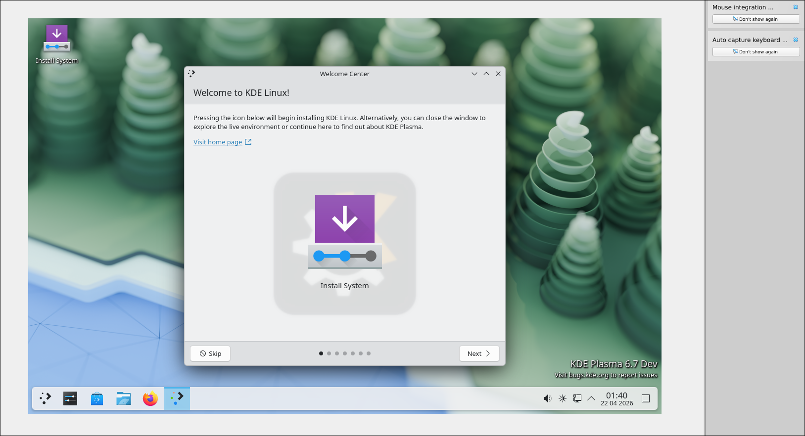
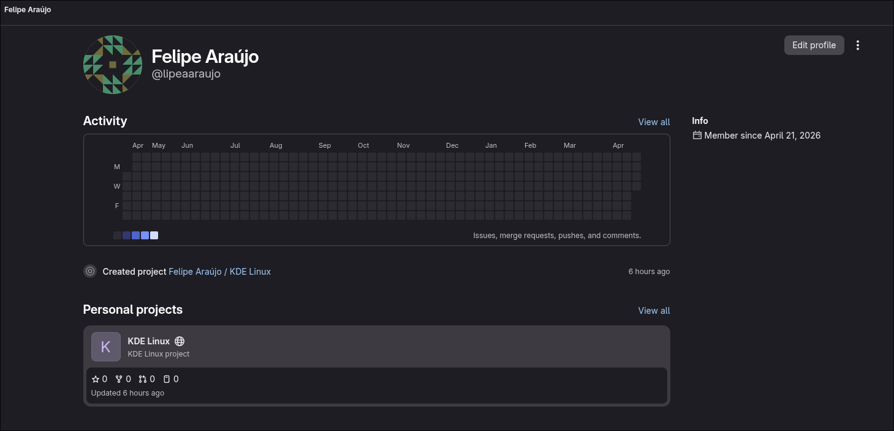
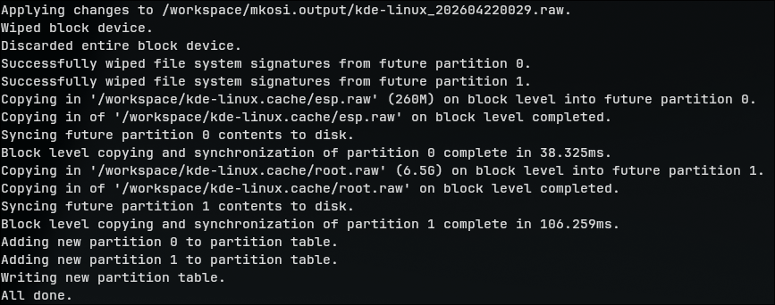
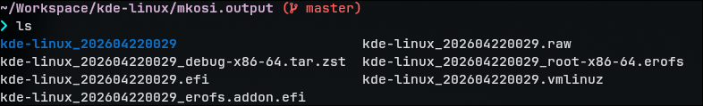
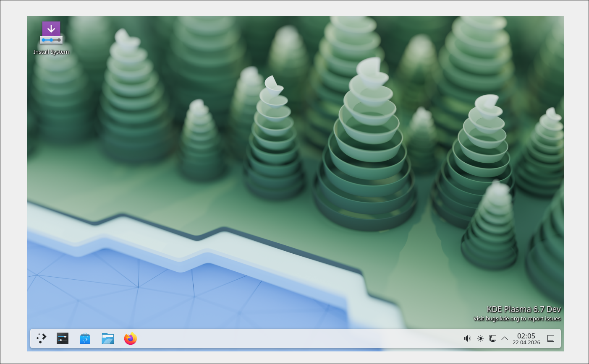

Diário de Bordo – Felipe Amorim de Araújo
Disciplina: [Gerência de Configuração Evolução de Software] Equipe: [KDE Linux] Comunidade/Projeto de Software Livre: [KDE Linux]
Sprint 0 – 08/04 - 22/04
Resumo da Sprint
Nesse Sprint, foquei em me familiarizar com a comunidade KDE, seus canais de comunicação e o processo de contribuição. Realizei a instalação do KDE Linux em uma máquina virtual para entender melhor o ambiente de desenvolvimento e os requisitos para contribuir com o projeto. Também criei minha conta no Invent KDE e configurei meu ambiente local para realizar o build da imagem do KDE Linux utilizando o Podman.
Atividades Realizadas
| Data | Atividade | Tipo (Código/Doc/Discussão/Outro) | Link/Referência | Status |
|---|---|---|---|---|
| 11/04 | Primeira leitura dos guias de envolvimento e contribuição na comunidade KDE | Estudo | Get Involved, Wiki KDE Linux, Documentação KDE Linux | Concluído |
| 11/04 | Criação da conta no Matrix e entrada nas salas do KDE New Contributors e KDE Linux | Discussão | Perfil Matrix, Salas do KDE | Concluído |
| 12/04 | Instalação do KDE Linux em uma máquina virtual | Código | KDE Linux na VM, Tutorial, Wiki | Concluído |
| 20/04 | Criação da minha conta no Invent KDE | Discussão | Perfil | Concluído |
| 21/04 | Criação do fork do repositório principal do KDE Linux | Código | Fork | Concluído |
| 21/04 | Configuração do ambiente de desenvolvimento e build da imagem do KDE Linux localmente | Código | Mensagem de sucesso do build, Arquivos gerados, Imagem buildada rodando na VM | Concluído |
{kind=link}
{kind=link}
{kind=link}
{kind=link}
{kind=link}
{kind=link}
Maiores Avanços
- Familiarização com a comunidade KDE e seus canais de comunicação: Consegui me familiarizar com os canais de comunicação da comunidade KDE, como o Matrix, e entender como participar das discussões e interações com outros membros da comunidade.
- Criação da conta no Invent KDE: Consegui criar minha conta no Invent KDE, o que é um passo fundamental para começar a contribuir com o código do projeto e participar ativamente da comunidade de desenvolvimento do KDE Linux.
- Configuração do ambiente de desenvolvimento e build da imagem do KDE Linux localmente: Consegui configurar o ambiente de desenvolvimento utilizando o Podman e realizar o processo de build da imagem do KDE Linux localmente, gerando os arquivos necessários para rodar o sistema operacional em uma máquina virtual.
Maiores Dificuldades
- Entrar nas rooms (Matrix): Tive problemas para entrar nas salas do Matrix, pois não tinha entendido que era possível entrar diretamente pelo homeserver do Matrix sem precisar logar no homeserver do KDE.
- Poucas issues abertas para novos contribuidores: Notei que existem poucas issues abertas com a tag
Newcomer, o que dificultou a identificação de tarefas mais simples para que eu pudesse começar a contribuir.
Aprendizados
- Interação em um ambiente de desenvolvimento de software livre: Aprendi a dinâmica base de interação em uma comunidade de software livre, como participar das discussões, tirar dúvidas e colaborar com outros membros da comunidade.
- Conhecer o ecossistema KDE: Tomei conhecimento do ecossistema KDE, seus projetos e iniciativas, mesmo já até mesmo tendo utilizado ferramentas e softwares desenvolvidos pela comunidade KDE.
- Conceitos do desenvolvimento de distribuições Linux: Estudando o projeto e o repositório, pude entender melhor os conceitos envolvidos no desenvolvimento de uma distribuição Linux, construção de imagens, distribuição de pacotes e manutenção de um sistema operacional.
Documentação das principais atividades
Criação da conta no Matrix e entrada nas salas do KDE
Essa seção está bem documentada na página Matrix na wiki da comunidade. Fiz o meu registro no homeserver do próprio Matrix (matrix.org) e entrei utilizando o cliente Element:

Após isso, por confusão minha, tentei entrar nas salas do KDE utilizando o homeserver do KDE (kde.org), mas não consegui logar. Depois de entender que era possível entrar diretamente pelo matrix.org, consegui acessar as salas do KDE New Contributors e KDE Linux:

Instalação do KDE Linux em uma máquina virtual
O processo de instalação do KDE Linux em uma VM já está bem documentado na documentação principal do projeto. Optei por criar uma VM com o VirtualBox por ser a opção mais simples de testar o sistema operacional e me familiarizar na minha máquina local.
Primeiramente fiz a instalação da imagem .raw do KDE Linux e conversão do arquivo para uma imagem VMDK:
VBoxManage convertfromraw kde-linux_*.raw kdelinux.vmdk --format VMDK

Após isso, abri o VirtualBox e criei uma nova máquina virtual seguindo as opções recomendadas na documentação e adicionando o arquivo kdelinux.vmdk como o disco rígido da máquina virtual:

Com a máquina virtual criada, consegui iniciar o KDE Linux e prosseguir com a instalação e configuração do SO, seguindo as instruções do próprio processo de instalação nativo do KDE Linux:

Criação da conta no Invent KDE e fork do repositório
As instruções para criação da conta no Invent KDE foram passadas para nós via Telegram pelo Farid. Resumia a acessar o ambiente, clicar em "Sign Up" e preencher os dados necessários para criar a conta.
Depois de criar a conta e configurar minhas chaves de acesso SSH, acessei o repositório do KDE Linux, o qual o link também foi disponibilizado pelo Farid, e criei um fork do repositório para minha conta.

Processo de build da imagem do KDE Linux
Tendo criado o fork do repositório e clonado em minha máquina local, existem 2 opções para realizar o build da imagem do KDE Linux:
- Build da imagem via Docker ou Podman, utilizando o script
./build_docker.sh [--podman] [--country <country-code>] [--parallel <num>]. - Buildar em um host com Arch Linux, seguindo o pipeline de build:
bootstrap.sh: configura o ambiente de build, incluindo a instalação de dependências e configuração de repositórios personalizados do KDE../build.sh [--force] [--debug]: Orquestra o processo completo de build, desde a compilação de ferramentas Rust, geração do rootfs com mkosi, montagem da imagem de disco e criação dos arquivos de saída.
Optei por seguir com a primeira opção, utilizando o Podman ao invés do Docker. Um dos requisitos para fazer o build containerizado é ter o driver de storage Btrfs configurado no Docker/Podman, para que o processo de build possa montar os arquivos de sistema de arquivos necessários para a construção da imagem do KDE Linux. Utilizando o Podman consegui isolar a configuração para não impactar outros containers e projetos que estou rodando com o Docker.
O processo se resumiu em instalar o Podman e configurar o driver de storage Btrfs alterando no arquivo /etc/containers/storage.conf:
driver = "btrfs"
Também seguindo as instruções do guia de desenvolvimento, criei um arquivo de configuração local mkosi.local.conf para acelerar o processo de build, com o seguinte conteúdo:
[Content]
Environment=LOCALE_GEN="en_US.UTF-8 UTF-8"
Environment=MIRRORS_COUNTRY=us
Environment=PARALLEL_DOWNLOADS=50
Após isso, executei o comando de build utilizando o Podman:
./build_docker.sh --podman
Tive rodar o comando algumas vezes por conta de perdas de conexão com os repositórios necessários para a instalação e sincronização dos pacotes e dependências (em especial o archive.archlinux.org), mas consegui completar o processo de build e gerar a imagem do KDE Linux localmente:


Cada um dos arquivos gerados tem uma função específica no processo de boot e execução do KDE Linux, como descrito na tabela abaixo:
| Nome do arquivo | Descrição |
|---|---|
| kde-linux_202604220029.raw | Imagem bootável |
| kde-linux_202604220029.efi | Unified Kernel Image (UKI) |
| kde-linux_202604220029_erofs.addon.efi | Erofs addon EFI |
| kde-linux_202604220029_root-x86-64.erofs | Rootfs comprimido |
| kde-linux_202604220029_debug-x86-64.tar.zst | Arquivo de símbolos de debug |
| kde-linux_202604220029/ | Diretório do rootfs construído |
Por fim, rodei a imagem buildada na máquina virtual utilizando o VirtualBox, e consegui iniciar o sistema operacional com sucesso, confirmando que o processo de build foi concluído corretamente:

Plano Pessoal para a Próxima Sprint
- [ ] Explorar as issues abertas no repositório do KDE Linux e identificar uma issue com a tag
Newcomerpara começar a contribuir com código. - [ ] Realizar a contribuição com a issue identificada, seguindo o processo de contribuição do projeto e interagindo com outros membros da comunidade para tirar dúvidas e receber feedback.
- [ ] Auxiliar outros membros da equipe com dúvidas e discussões relacionadas ao processo de build e desenvolvimento do KDE Linux, compartilhando o conhecimento adquirido durante essa Sprint.
Sprint 1 – 23/04 - 08/05
Resumo da Sprint
Nesse Sprint, meu foco foi conseguir identificar uma issue adequada para iniciantes no repositório do KDE Linux e realizar minha primeira contribuição com código. Consegui encontrar uma issue com a tag Newcomer relacionada à implementação de um recurso de pré-visualização de arquivos STL, e entrei em contato com a comunidade do projeto para solicitar autorização para trabalhar nela como parte de uma atividade acadêmica.
Atividades Realizadas
| Data | Atividade | Tipo (Código/Doc/Discussão/Outro) | Link/Referência | Status |
|---|---|---|---|---|
| 01/05 | Procura por issues com a tag Newcomer no repositório |
Estudo | Issues | Concluído |
| 01/05 | Escolha da issue Pre-install an STL thumbnailer para contribuir | Estudo | Issue | Concluído |
| 02/05 | Envio de comentário na issue escolhida para solicitar autorização para contribuir | Discussão | Comentário na issue | Concluído |
| 03/05 | Resposta dos mantenedores autorizando a contribuição e dando mais instruções | Discussão | Resposta na issue | Concluído |
| 05/05 | Estudo sobre o formato STL, STL thumbnailers disponíveis e o gerenciador de pacotes Flatpak | Estudo | Formato STL, stl-thumb, Papa’s Best STL Thumbnails, Marlin 3D Printer Tool | Concluído |
| 06/06 | Estudo sobre empacotamento de aplicativos utilizando o Flatpak | Estudo | Flatpak | Concluído |
Maiores Avanços
- Identificação de uma issue adequada para iniciantes: Consegui encontrar uma issue com a tag
Newcomerrelacionada à implementação de um recurso de pré-visualização de arquivos STL, o que me permitiu escolher uma tarefa adequada para começar a contribuir com código no projeto. - Contato com a comunidade para solicitar autorização para contribuir: Entrei em contato com os mantenedores do projeto através da issue para solicitar autorização para trabalhar na issue escolhida como parte de uma atividade acadêmica, e recebi uma resposta positiva autorizando minha contribuição e dando mais instruções sobre como proceder.
- Estudo sobre o formato STL, STL thumbnailers disponíveis e o gerenciador de pacotes Flatpak: Realizei um estudo aprofundado sobre o formato de arquivos STL, os thumbnailers de arquivos STL disponíveis e o gerenciador de pacotes Flatpak, o que me permitiu entender melhor o contexto técnico da issue escolhida e me preparar para realizar a contribuição de forma mais eficiente.
Maiores Dificuldades
- Poucas issues abertas para novos contribuidores: Notei que existem poucas issues abertas com a tag
Newcomer, o que dificultou a identificação de tarefas mais simples para que eu pudesse começar a contribuir. - Entender o contexto técnico da issue escolhida: A issue escolhida envolve conceitos técnicos relacionados ao formato de arquivos STL, thumbnailers e empacotamento de aplicativos com Flatpak, o que exigiu um estudo aprofundado para entender o contexto e os requisitos técnicos necessários para realizar a contribuição de forma eficiente.
Aprendizados
- Identificar uma issue adequada para iniciantes: Aprendi a importância de analisar bem as issues disponíveis no repositório para identificar aquelas que são adequadas para iniciantes, levando em consideração o nível de complexidade, os requisitos técnicos e o contexto da tarefa.
- Contato com a comunidade para solicitar autorização para contribuir: Entendi como funciona o processo de contato com os mantenedores de um projeto de software livre para solicitar autorização para contribuir, e a importância de ser claro e educado na comunicação para estabelecer uma boa relação com a comunidade do projeto.
- Estudo sobre o formato STL, STL thumbnailers disponíveis e o gerenciador de pacotes Flatpak: Aprendi sobre o formato de arquivos STL, os thumbnailers de arquivos STL disponíveis e o gerenciador de pacotes Flatpak, o que me permitiu entender melhor o contexto técnico da issue escolhida e me preparar para realizar a contribuição de forma mais eficiente.
- Importância de entender o contexto técnico de uma issue antes de começar a contribuir: Percebi que é fundamental entender o contexto técnico de uma issue antes de começar a trabalhar nela, para garantir que a contribuição seja feita de forma eficiente e atenda aos requisitos técnicos necessários.
Plano Pessoal para a Próxima Sprint
- [ ] Fazer o empacotamento do thumbnailer de arquivos STL utilizando o Flatpak, seguindo as instruções e diretrizes fornecidas pelos mantenedores do projeto.
- [ ] Abrir o pull request e começar a implementar as alterações necessárias na codebase do KDE Linux para integrar o thumbnailer de arquivos STL.
- [ ] Interagir com os mantenedores e outros membros da comunidade para tirar dúvidas, receber feedback e ajustar a contribuição conforme necessário para garantir que ela seja aceita e integrada ao projeto.
Sprint 2 – 08/05 - 22/05
Resumo da Sprint
Nesse Sprint, meu foco foi realizar o empacotamento do thumbnailer de arquivos STL utilizando o Flatpak, seguindo as instruções e diretrizes fornecidas pelos mantenedores do projeto. Consegui gerar o pacote Flatpak do thumbnailer stl2thumbnail e disponibilizar o pacote em um repositório público no GitHub, seguindo as instruções e diretrizes fornecidas pelos mantenedores do projeto.
Atividades Realizadas
| Data | Atividade | Tipo (Código/Doc/Discussão/Outro) | Link/Referência | Status |
|---|---|---|---|---|
| 08/05 | Escolha do thumbnailer stl2thumbnail de acordo com o feedback dos mantenedores na Issue |
Discussão | stl2thumbnail, Comentário a issue | Concluído |
| 15/05 | Criação de repositório para disponibilizar o pacote Flatpak e o manifesto usado | Documentação | Repositório | Concluído |
| 15/05 | Empacotamento em Flatpak do STL thumbnailer | Código | Release com flatpak | Concluído |
| 22/05 | Geração da release no repositório com o bundler do thumbnailer | Documentação | Release com flatpak | Concluído |
| 22/05 | Mensagem na issue com os links do repositório e release para review dos mantenedores | Discussão | Mensagem na issue | Concluído |
Maiores Avanços
- Geração do pacote Flatpak do thumbnailer
stl2thumbnaile disponibilização do pacote em um repositório público no GitHub, seguindo as instruções e diretrizes fornecidas pelos mantenedores do projeto.
Maiores Dificuldades
- Acabei não recebendo feedback sobre a última mensagem na issue o que não me possibilitou a dar continuidade a contribuição, mas acredito que isso se deve ao fato de os mantenedores estarem ocupados com outras demandas do projeto. De qualquer forma, pretendo continuar acompanhando a issue e interagindo com os mantenedores para garantir que minha contribuição seja integrada ao projeto.
- Pessoalmente também demorei para começar a implementação do empacotamento do thumbnailer, o que atrasou um pouco o processo de contribuição. Para a próxima Sprint, pretendo me organizar melhor para conseguir dar continuidade à contribuição de forma mais fluida e eficiente.
Aprendizados
- Processo de empacotamento de aplicativos utilizando o Flatpak: Aprendi sobre o processo de empacotamento de aplicativos utilizando o Flatpak, incluindo a criação do manifesto, configuração das dependências e geração do pacote Flatpak, o que me permitiu realizar a contribuição de forma eficiente e seguindo as diretrizes do projeto.
- Importância de se comunicar melhor com os mantenedores do projeto: Percebi a importância de manter uma comunicação clara e frequente com os mantenedores do projeto, para garantir que a contribuição esteja alinhada com as expectativas do projeto e para receber feedbacks que possam ajudar a melhorar a contribuição.
Plano Pessoal para a Próxima Sprint
- [ ] Aguardar o feedback dos mantenedores sobre a última mensagem na issue para dar continuidade à contribuição, realizando as alterações necessárias conforme o feedback recebido para garantir que a contribuição seja aceita e integrada ao projeto.
- [ ] Começar outra contribuição para o projeto, escolhendo outra issue com a tag
Newcomerou outra tarefa adequada para iniciantes, e seguir o processo de contribuição do projeto para realizar a contribuição de forma eficiente e colaborativa com a comunidade do projeto. - [ ] Continuar acompanhando as discussões e interações na comunidade do projeto, participando ativamente das discussões, tirando dúvidas e colaborando com outros membros da comunidade para fortalecer minha participação no projeto e contribuir de forma mais efetiva para o desenvolvimento do KDE Linux.
Sprint 3 - 23/05 - 05/06
Resumo da Sprint
Nessa Sprint dei continuidade à contribuição do bundle thumbnailer na issue escolhida, realizando os ajustes necessários para garantir que o recurso esteja completamente integrado e funcionando corretamente no KDE Linux, e interagindo com os mantenedores e outros membros da comunidade para receber feedbacks e garantir que a contribuição esteja alinhada com as expectativas do projeto. Consegui realizar ajustes no manifesto do Flatpak para corrigir o nome do thumbnailer no post-install, e recebi feedbacks validando a correção e trazendo mais alguns ajustes necessários para a integração do bundle thumbnailer no KDE Linux, o que demonstra um avanço significativo na contribuição e na integração do recurso no projeto.
Atividades Realizadas
| Data | Atividade | Tipo (Código/Doc/Discussão/Outro) | Link/Referência | Status |
|---|---|---|---|---|
| 27/05 | Resposta de contribuidor do projeto confirmando teste e funcionamento do bundle thumbnailer no KDE Linux | Discussão | Comentário | Concluído |
| 27/05 | Resposta de outro contribuidor trazendo alguns próximos passos e ajustes necessários para a integração do bundle thumbnailer no KDE Linux | Discussão | Comentário | Concluído |
| 30/05 | Ajuste do manifesto do Flatpak para renomear o nome do thumbnailer no post-install e atualização da release com o bundle corrigido | Código/Documentação | Commit, Release | Concluído |
| 31/05 | Resposta do contribuidor validando a correção e trazendo alguns ajustes que também foram feitos por ele | Discussão | Comentário, Commit | Concluído |
| 01/06 | Comentário do mesmo contribuidor trazendo mais um ajuste necessário para a integração do bundle thumbnailer no KDE Linux | Discussão | Comentário | Concluído |
Maiores Avanços
- Recebi feedbacks de contribuidor do projeto confirmando o teste e funcionamento do bundle thumbnailer no KDE Linux, o que é um avanço importante para a integração do recurso no projeto.
- Consegui realizar ajustes no manifesto do Flatpak para corrigir o nome do thumbnailer no post-install, e recebi feedbacks validando a correção e trazendo mais alguns ajustes necessários para a integração do bundle thumbnailer no KDE Linux, o que demonstra um avanço significativo na contribuição e na integração do recurso no projeto.
- A interação com os mantenedores e outros membros da comunidade para receber feedbacks e realizar ajustes necessários para a integração do bundle thumbnailer no KDE Linux foi um avanço importante para garantir que a contribuição esteja alinhada com as expectativas do projeto e para fortalecer minha participação na comunidade do projeto.
Maiores Dificuldades
- Apesar de ter recebido feedbacks importantes para a integração do bundle thumbnailer no KDE Linux, ainda existem alguns ajustes necessários para garantir que o recurso esteja completamente integrado e funcionando corretamente no projeto, o que pode ser um desafio para garantir que a contribuição seja aceita e integrada ao projeto.
- Falta de familiaridade com a tecnologia de empacotamento de aplicativos utilizando o Flatpak e com o processo de integração de recursos no KDE Linux, o que pode dificultar a realização dos ajustes necessários para a integração do bundle thumbnailer no projeto.
- Acabei não conseguindo começar outra contribuição para o projeto por conta da falta de issues abertas com a tag
Newcomerou outras tarefas adequadas para iniciantes, o que dificultou a identificação de uma nova tarefa para contribuir e dar continuidade à minha participação no projeto.
Aprendizados
- Importância de receber feedbacks para a melhoria da contribuição: Percebi que receber feedbacks de outros membros da comunidade é fundamental para melhorar a contribuição e garantir que ela esteja alinhada com as expectativas do projeto, o que pode aumentar as chances de aceitação e integração da contribuição no projeto.
- Importância de realizar ajustes necessários para a integração da contribuição no projeto: Entendi que é fundamental realizar os ajustes necessários para garantir que a contribuição esteja completamente integrada e funcionando corretamente no projeto.
- Importância de se comunicar de forma clara e frequente com os mantenedores e outros membros da comunidade: Percebi que manter uma comunicação clara e frequente com os mantenedores e outros membros da comunidade é fundamental para garantir que a contribuição esteja alinhada com as expectativas do projeto, para receber feedbacks importantes e para fortalecer minha participação na comunidade do projeto.
Plano Pessoal para a Próxima Sprint
- [ ] Dar continuidade à contribuição do bundle thumbnailer na issue escolhida, realizando os ajustes necessários para garantir que o recurso esteja completamente integrado e funcionando corretamente no KDE Linux, e interagindo com os mantenedores e outros membros da comunidade para receber feedbacks e garantir que a contribuição esteja alinhada com as expectativas do projeto.
- [ ] Continuar procura por outras issues com a tag
Newcomerou outras tarefas adequadas para iniciantes no repositório do KDE Linux, para identificar uma nova tarefa para contribuir e dar continuidade à minha participação no projeto. - [ ] Continuar acompanhando as discussões e interações na comunidade do projeto, participando ativamente das discussões, tirando dúvidas e colaborando com outros membros da comunidade para fortalecer minha participação no projeto e contribuir de forma mais efetiva para o desenvolvimento do KDE Linux.
Sprint 4 - 06/06 - 20/06
Resumo da Sprint
Nessa sprint consegui contribuir em uma nova issue, que consiste em adicionar uma ferramenta que coleta informações e logs essenciais de um sistema KDE Linux automaticamente para auxiliar na abertura de issues e bugs. A issue foi escolhida por mim e aprovada pelo mantenedor do projeto, e a primeira implementação da solução foi realizada e submetida para revisão através de um merge request.
Atividades Realizadas
| Data | Atividade | Tipo (Código/Doc/Discussão/Outro) | Link/Referência | Status |
|---|---|---|---|---|
| 06/06 | Mensagem no Matrix com dúvida em relação ao namespace do repositório do pacote (inicialmente criado no meu GitHub principal) | Discussão | Mensagem | Esperando resposta |
| 16/06 | Escolha de nova issue sem a tag Newcomer para contribuição (Some kind of "kde-linux-bug-report" tool that collects info automatically) |
Discussão | Issue | Concluído |
| 16/06 | Comentário de interesse para entender o escopo da nova issue escolhida | Discussão | Comentário na issue | Concluído |
| 17/06 | Resposta do mantenedor (Nate) explicando o escopo da nova issue escolhida e dando instruções para começar a contribuição | Discussão | Comentário na issue | Concluído |
| 20/06 | Abertura do merge request (Add a bug report tool that collects essential info automatically) com a primeira implementação da nova issue escolhida | Código/Discussão | Merge Request, Commit | Concluído |
{kind=link}
Detalhes da Sprint
Maiores Avanços
- Escolha de uma nova issue para contribuição, que consiste em adicionar uma ferramenta que coleta informações e logs essenciais de um sistema KDE Linux automaticamente para auxiliar na abertura de issues e bugs. Essa era uma issue não
Newcomer, mas que foi escolhida por mim e aprovada pelo mantenedor do projeto. - Entendimento do escopo da nova issue escolhida e das instruções fornecidas pelo mantenedor do projeto para começar a contribuição.
- Abertura do merge request com a primeira implementação da nova issue escolhida, submetendo a contribuição para revisão pelos mantenedores do projeto.
Maiores Dificuldades
- Não consegui receber resposta no Matrix em relação à dúvida sobre o namespace do repositório do pacote. O que me deixou travado na contribuição da issue sobre empacotamento do STL thumbnailer.
- Entender o escopo da nova issue escolhida e as instruções fornecidas pelo mantenedor do projeto para começar a contribuição, o que exigiu uma comunicação clara com o mantenedor para garantir que a contribuição estivesse alinhada com as expectativas do projeto.
Aprendizados
- Definição de escopo de uma issue: Aprendi a importância de entender claramente o escopo de uma issue antes de começar a trabalhar nela, para garantir que a contribuição esteja alinhada com as expectativas do projeto e para evitar retrabalho.
- Formato de commits e abertura de merge requests no KDE Linux: Aprendi sobre o formato de commits e a abertura de merge requests no KDE Linux, seguindo as diretrizes do projeto para garantir que a contribuição seja aceita e integrada ao projeto. (Na última contribuição, os commits foram feitos em um repositório a parte do ambiente por se tratar de um empacotamento).
- Primeira issue sem a tag
Newcomer: Aprendi que é possível contribuir com o projeto mesmo em issues que não possuem a tagNewcomer, desde que haja uma comunicação clara com os mantenedores do projeto para garantir que a contribuição esteja alinhada com as expectativas do projeto.
Plano Pessoal para a Próxima Sprint
- [ ] Finalizar a implementação da nova issue escolhida, realizando os ajustes necessários conforme o feedback recebido no merge request para garantir que a contribuição seja aceita e integrada ao projeto.
- [ ] Continuar acompanhando as discussões e interações na comunidade do projeto, participando ativamente das discussões, tirando dúvidas e colaborando com outros membros da comunidade para fortalecer minha participação no projeto.
Sprint 5 - 21/06 - 01/07
Resumo da Sprint
Nessa Sprint dei continuidade à contribuição da issue escolhida na Sprint anterior, realizando rodadas de feedback e ajustes na implementação da ferramenta que coleta informações e logs essenciais de um sistema KDE Linux automaticamente para auxiliar na abertura de issues e bugs, conforme o feedback recebido no merge request. Por fim, consegui que meu merge request fosse aprovado e a contribuição integrada ao projeto no fim da sprint.
Atividades Realizadas
| Data | Atividade | Tipo | Link/Referência | Status |
|---|---|---|---|---|
| 26/06 | Review do mantecedor (Nate) no merge request (Add a bug report tool that collects essential info automatically) com feedbacks, ajustes nas mensagens para o user, permissões e renomeação do script | Discussão | Thread 1, Thread 2, Thread 3, Thread 4, Thread 4, Thread 5 | Concluído |
| 27/06 | Ajustes no header do script, correção das mensagens, permissões corretas para o comando de dmsg e renomeação do script para kde-linux-collect-logs |
Código/Discussão | Commits: Clarify bug-report messages and simplify collect header, Run dmesg via run0 so it can read the kernel buffer, Strip ANSI escape codes from kscreen-doctor output, Rename tool to kde-linux-collect-logs and point users to the tracker | Concluído |
| 28/06 | Segunda revisão do mantenedor (Nate) com feedback e ajustes novamente no nome do script, alguns caracteres em formato UNIX e sanitização de informações sensíveis nos logs | Discussão | Thread 1, Thread 2, Thread 3, Thread 4, Thread 5 | Concluído |
| 29/06 | Ajustes no nome do script, sanitização de informações sensíveis nos logs e correção de caracteres em formato UNIX | Código/Discussão | Commits: Making small corrections to messages and updating report name prefix to kde-linux-logs, Redact common identifiers from collected logs as a first pass, Rename tool to collect-logs | Concluído |
| 30/06 | Último pequeno feedback sobre um bug na mensagem de execução do comando dmsg do script |
Discussão | Thread | Concluído |
| 30/06 | Ajuste na mensagem de execução do comando dmsg do script |
Código/Discussão | Commit: Fix collect label showing the privilege wrapper instead of the command | Concluído |
| 30/06 | MR aprovado pelo mantenedor (Nate) e mesclado no repositório do projeto | Discussão | Merge Request | Concluído |
Detalhes da Sprint
Maiores Avanços
- Consegui que meu merge request sobre a implementação da ferramenta que coleta informações e logs essenciais de um sistema KDE Linux automaticamente para auxiliar na abertura de issues e bugs fosse aprovado e integrado ao projeto.
- Consegui realizar rodadas de feedback com o mantenedor do projeto e ajustes na implementação da ferramenta, conforme o feedback recebido no merge request, garantindo que a contribuição estivesse alinhada com as expectativas e atendendo aos requisitos técnicos necessários para a integração da ferramenta no KDE Linux.
- Com a aprovação do merge request, consegui uma menção no post "This Month in KDE Linux" de junho, escrito pelo Nate (mantenedor).
Maiores Dificuldades
- Não consegui progredir com a issue original sobre o empacotamento do STL thumbnailer.
- Iterar sobre as correções e ajustes necessários para a integração da ferramenta no KDE Linux, conforme o feedback recebido no merge request, exigiu que o build fosse feito localmente para testar as alterações, o que demandou tempo e esforço.
Aprendizados
- Iteração sobre feedbacks para melhoria da contribuição: Aprendi a importância de iterar sobre os feedbacks recebidos no merge request para melhorar a contribuição e garantir que ela esteja alinhada com as expectativas do projeto.
- Realizar testes locais para validar as alterações: É fundamental realizar testes locais para validar as alterações feitas na implementação da ferramenta, garantindo que ela esteja funcionando corretamente.
- Importância de manter uma comunicação clara e frequente com os mantenedores do projeto: Aprendi que manter uma comunicação clara e frequente com os mantenedores do projeto é fundamental para garantir que a contribuição esteja de acordo.